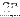

Next: Communication Blocks Up: Signal Processing Blocks Previous: Windowed X-Engine (win_x_engine) Contents
| Parameter | Variable | Description |
|---|---|---|
| Number of Antennas () | ant_bits | Bitwidth of the number of antennas in the system. |
| Bitwidth of Samples in | bits_in | Bitwidth of component of the input. |
| X integration length () | x_int_bits | Bitwidth of X-engine accumulation length. |
| Sync Pulse Period () | sync_period | Bitwidth of number of valids between sync pulses. |
| Port | Dir. | Data Type | Description |
|---|---|---|---|
| tvg_sel | in | ufix_2_0 | TVG selection. 0=off (passthrough), 1-3=TVG select. |
| data_in | in | inherited: bits_in*4 | Data in for passthrough. |
| valid_in | in | boolean | Valid in made available for passthrough. |
| sync_in | in | boolean | Sync in made available for passthrough. |
| data_out | out | inherited: bits_in*4 | Port Description |
| sync_out | out | boolean | Port Description |
| valid_out | out | boolean | Port Description |